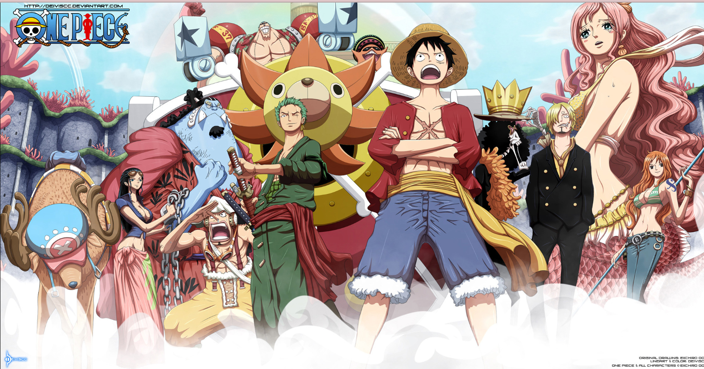
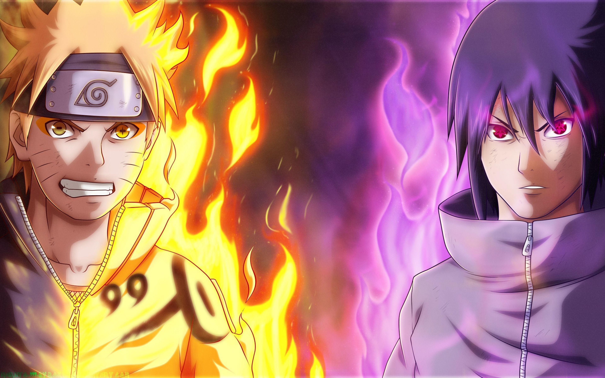
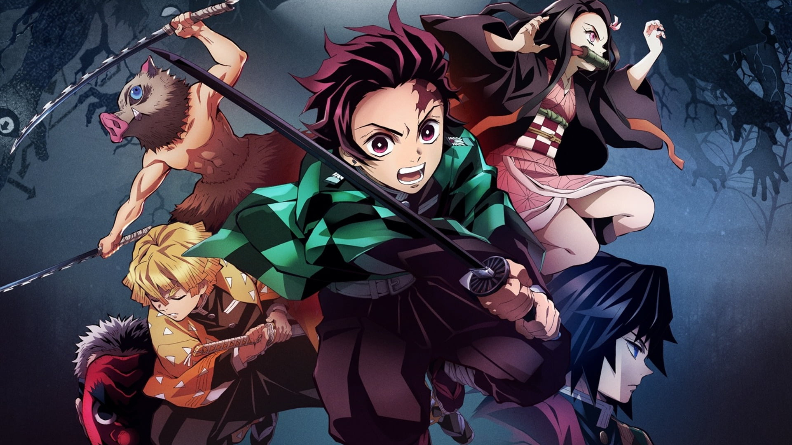

The story follows the adventures of Monkey D. Luffy, a boy whose body gained the properties of rubber after unintentionally eating a Devil Fruit. With his crew of pirates, named the Straw Hat Pirates, Luffy explores the Grand Line in search of the world's ultimate treasure known as "One Piece" in order to become the next Pirate King.
Naruto is a Japanese manga series written and illustrated by Masashi Kishimoto. It tells the story of Naruto Uzumaki, a young ninja who seeks recognition from his peers and dreams of becoming the Hokage, the leader of his village.
The story follows Light Yagami, a genius high school student who discovers a mysterious notebook: the "Death Note", which belonged to the shinigami Ryuk, and grants the user the supernatural ability to kill anyone whose name is written in its pages. The series centers around Light's subsequent attempts to use the Death Note to carry out a worldwide massacre of individuals whom he deems immoral and to create a crime-free society, using the alias of a god-like vigilante named "Kira", and the subsequent efforts of an elite Japanese police task force, led by enigmatic detective L, to apprehend him.

It follows teenage Tanjiro Kamado, who strives to become a Demon Slayer after his family was slaughtered and his younger sister, Nezuko, turned into a demon.
Chainsaw Man follows the story of Denji, an impoverished young man who makes a contract that fuses his body with that of a dog-like devil named Pochita, granting him the ability to transform parts of his body into chainsaws. Denji eventually joins the Public Safety Devil Hunters, a government agency focused on fighting against devils whenever they become a threat to Japan. The second arc of the story focuses on Asa Mitaka, a high school student who enters into a contract with Yoru, the War Devil, who forces her to hunt down Chainsaw Man in order to reclaim the devils stolen from her.